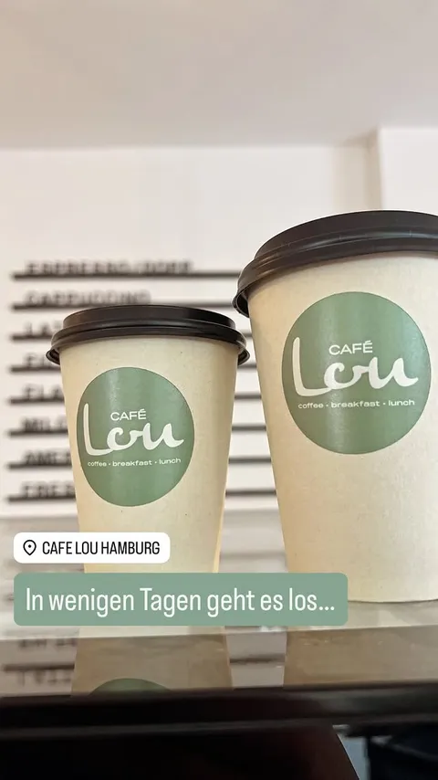
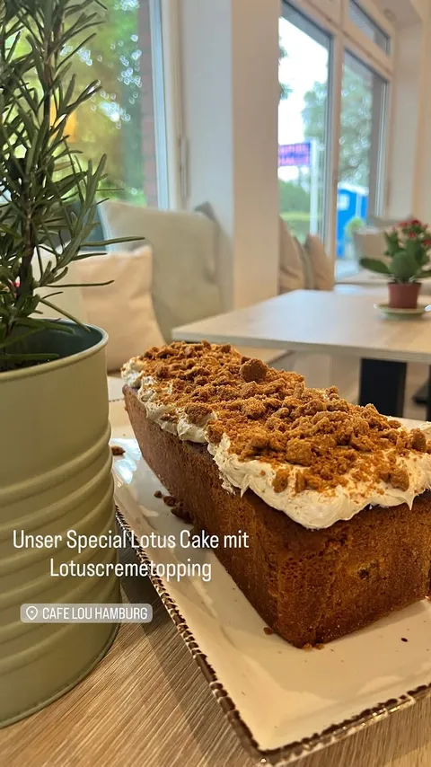

Tolles Café mit sehr, sehr leckerem Frühstück. Wir waren diese Woche zum ersten Mal dort und sind direkt drei Tage später wiedergekommen. Wir sind sehr glücklich, endlich so ein tolles Café in Meiendorf zu haben!
Unser Café
Ein Ort, zu dem du
gerne zurückkommst
An der Ecke Saseler und Meiendorfer Straße, zwischen Sasel, Rahlstedt und Volksdorf. Guter Kaffee aus sortenreiner Bohne, Gebäck aus dem eigenen Ofen, Mittagskarte mit der Saison. Ein Café für die Nachbarschaft, gemacht für den schnellen Espresso am Morgen wie für das lange Frühstück am Samstag.
Komm einmal vorbei. Du wirst wissen, wovon wir reden.

